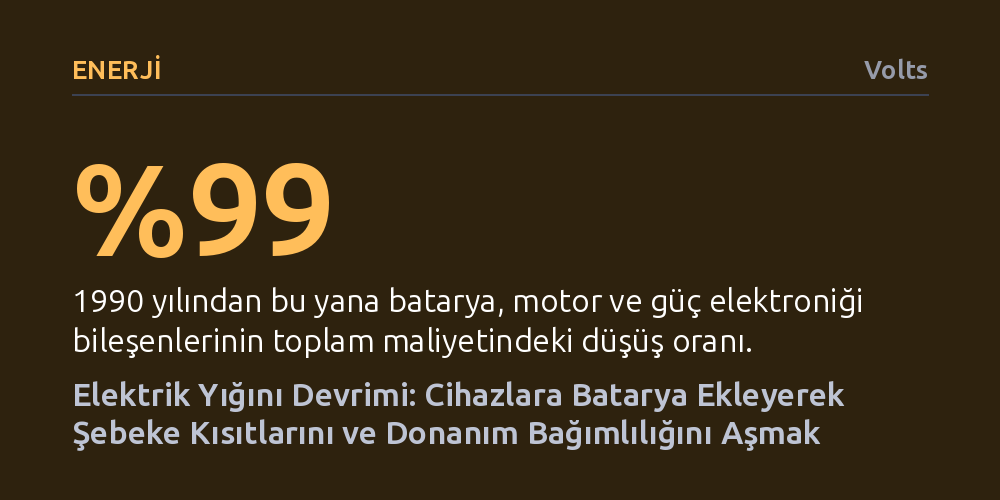

ENERJI · Volts · 2026-10-24
Batarya, motor ve güç elektroniğinden oluşan elektrik yığını 1990'dan bu yana yüzde 99 ucuzlayarak donanımı kökten dönüştürüyor. Ev aletlerine entegre edilen bataryalar, elektrik panosu yenileme zorunluluğunu kaldırırken şebekedeki ani güç sıçramalarını cihaz düzeyinde dengeliyor.
Elektrifikasyonun yalnızca şebeke altyapısını büyütmekle değil, tüketim cihazlarının içine yerleştirilen bataryalar sayesinde altyapı yatırımı gerektirmeden yerinde çözülebileceğini gösterir.

Temiz enerji tartışmaları uzun yıllar boyunca neredeyse tamamen enerjinin nasıl üretildiğine, yani rüzgar türbinlerine ve güneş panellerine odaklandı. Oysa çok daha köklü ve dönüştürücü bir kırılma, enerjiyi fiilen tüketen cihazların mimarisinde yaşanıyor. Bataryalar, elektrik motorları, güç elektroniği ve gömülü işlemcilerden oluşan bu teknolojik paket —yazarın tanımıyla "elektrik yığını"— 1990 yılından bu yana yaklaşık yüzde 99 oranında ucuzladı. Bu dramatik maliyet düşüşü; dronlardan elektrikli araçlara kadar hareket, ısı ve iş üreten tüm makinelerin elektrikli hale gelmesini kaçınılmaz kılıyor.
Ne var ki bu donanım devriminin jeopolitik ağırlık merkezi Batı'da değil. Günümüzde lityum iyon bataryaların yaklaşık dörtte üçü ve elektrik motorlarının kalbinde yer alan neodimyum mıknatısların yüzde 90'ı Çin tarafından üretiliyor. ABD ve müttefikleri yapay zeka yazılımlarına devasa sermaye aktarırken, Çin fiziksel dünyayı dönüştüren donanım altyapısında neredeyse tekel kurmuş durumda. Bu durum, geleceğin makinelerini kimin üreteceği ve ekonomik katma değerin nerede toplanacağı konusunda ciddi bir stratejik kırılganlık yaratıyor.
Tüketici elektroniğinde sıfırdan bir donanım girişimi kurmak isteyenlerin karşısına aşılması güç ekosistem duvarları çıkıyor. Akıllı telefon veya sanal gerçeklik başlığı gibi küçük cihazlar üretmek; milyonlarca kullanıcı, devasa uygulama mağazaları ve iki taraflı pazar dinamikleri gerektiriyor. Trilyon dolarlık teknoloji devleriyle bu alanda yarışmak imkansızken, roket ya da otomobil gibi büyük sistemler de başlangıç için devasa sermaye istiyor. Geriye kalan alan ise onlarca yıldır radikal bir mimari yenilik görmemiş orta ölçekli ev aletleri.
Ev aletlerinin en büyük avantajı, ağ etkilerine ihtiyaç duymamasıdır. D'Amico'nun ifadesiyle, "Bir ocak için çok oyunculu moda ihtiyacınız yoktur"; arkadaşınızın aynı ocağı kullanıyor olması cihazın işlevini veya değerini artırmaz. Dolayısıyla tek bir kullanıcıya üstün bir ürün satarak başarılı olmak mümkündür. Üstelik elektrikli otomobil endüstrisinin milyarlarca dolarlık Ar-Ge harcamasıyla olgunlaştırdığı batarya ve güç elektroniği teknolojisi, artık hazır bir biçimde ev aletlerine aktarılmayı beklemektedir.
İndüksiyonlu ocaklar ve benzeri güçlü ev aletleri, elektrik şebekesinin yaşadığı temel açmazın mikro bir kopyasını barındırır: ortalama tüketim ile anlık zirve (peak) güç arasındaki devasa uçurum. Tipik bir indüksiyonlu ocak günde yalnızca 200 ila 300 vat-saat enerji tüketir; bu değer bir dizüstü bilgisayarın günlük tüketiminden bile düşüktür. Ancak tüm pişirme alanları aynı anda açıldığında cihaz anlık olarak 7 ila 10 kilovat güç çeker. Bu anlık zirveyi karşılayabilmek için evlerin elektrik panolarını ve kablolama altyapılarını binlerce dolar harcayarak yenilemek gerekir.
Cihazın gövdesine entegre edilen kompakt bir lityum batarya bu altyapı kilitlenmesini ortadan kaldırır. Cihaz gün boyunca standart bir ev prizinden çok düşük güç çekerek yavaşça şarj olur; yemek pişirilen birkaç dakikalık yüksek güç ihtiyacını ise doğrudan kendi bataryasından karşılar. Böylece ne evin elektrik panosunu büyütmek gerekir ne de mahalle şebekesinde ani yük dalgalanmaları yaşanır. Dizüstü bilgisayarların priz gücünü aşan anlık yükleri bataryayla dengeleme mantığı, böylece mutfak aletlerine taşınmış olur.
Bu dönüşümün elektrik şebekesi açısından anlamı yapısal bir paradigma değişimine işaret eder. Geleneksel elektrik şebekesi, saniyede 50 veya 60 kez dönen devasa bir mekanik şaft gibi çalışır; sisteme bağlanan her üreticinin ve tüketicinin bu şaftla aynı frekansta kusursuz biçimde eşzamanlanması gerekir. Depolamanın bulunmadığı bu eski mimaride en ufak bir dengesizlik tüm sistemi çökertme riski taşır ve bağlantı kuyruklarını uzatır.
Bataryaların ve gelişmiş güç elektroniğinin cihaz düzeyine inmesi ise şebekeyi mekanik bir şafttan internet benzeri paket tabanlı, dağıtık ve kendi kendini onaran bir ağa dönüştürür. Galyum nitrür ve silikon karbür gibi yeni nesil yarı iletkenlerle donatılmış, yerel depolamaya sahip cihazlar, şebekeyi anlık talep şoklarından yalıtır. Temiz elektrifikasyonun kitleselleşmesi, altyapıyı baştan aşağı yenilemekten ziyade tüketim noktasındaki donanımları akıllı birer enerji tamponuna dönüştürmekten geçmektedir.